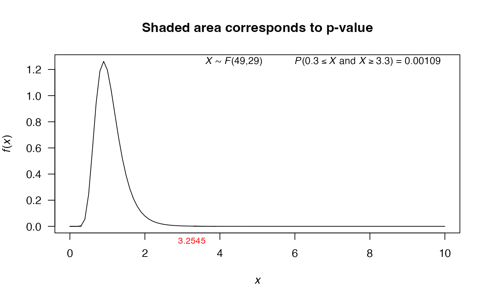

Variance test using vectors
var.test.RdThis function performs the test for a single variance or two variances given the vectors. This function is a generalization of var.test function from stats package.
var.test( x, y = NULL, alternative = "two.sided", null.value = 1, conf.level = 0.95 )
Arguments
| x | a (non-empty) numeric vector of data values. |
|---|---|
| y | an optional (non-empty) numeric vector of data values. |
| alternative | a character string specifying the alternative
hypothesis, must be one of |
| null.value | the hypothesized number (variance or ratio of the variances) in the null hypothesis. |
| conf.level | confidence level of the interval, by default its value is 0.95. |
Value
A list with class htest containing the following
components:
the value of the statistic.
the p-value for the test.
a confidence interval for the variance.
the sample variance (or ratio of the sample variances)
the specified hypothesized value for alternative hypothesis.
a character string describing the alternative hypothesis.
a character string indicating the type of test performed.
a character string giving the name of the data.
Examples
# One sample ----- # Interval confidence duration <- c(1470, 1510, 1690, 1740, 1900, 2000, 2030, 2010, 2190, 2200, 2290, 2380, 2390, 2480, 2500, 2580, 2700) var.test(x=duration, conf.level=0.95)#> #> X-squared test for variance #> #> data: duration #> X-squared = 2209576, df = 16, p-value < 2.2e-16 #> alternative hypothesis: true variance is not equal to 1 #> 95 percent confidence interval: #> 76600.78 319873.17 #> sample estimates: #> variance of x #> 138098.5 #># Hypothesis testing # H0: sigma2 = 100 # H1: sigma2 > 100 weight <- c(775, 780, 781, 795, 803, 810, 823) var.test(x=weight, alternative='greater', null.value=100)#> #> X-squared test for variance #> #> data: weight #> X-squared = 18.934, df = 6, p-value = 0.004276 #> alternative hypothesis: true variance is greater than 100 #> 95 percent confidence interval: #> 0.000 1157.789 #> sample estimates: #> variance of x #> 315.5714 #># Using the plot function res1 <- var.test(x=weight, alternative='greater', null.value=100) plot(res1)# Two samples ----- # Hypothesis testing # H0: sigma1/sigma2 = 1 # H1: sigma1/sigma2 != 1 x1 <- rnorm(50, mean = 0, sd = 2) x2 <- rnorm(30, mean = 1, sd = 1) res2 <- var.test(x1, x2) res2#> #> F test to compare two variances #> #> data: x1 and x2 #> F = 4.3221, num df = 49, denom df = 29, p-value = 7.146e-05 #> alternative hypothesis: true ratio of variances is not equal to 1 #> 95 percent confidence interval: #> 2.171539 8.131728 #> sample estimates: #> ratio of variances #> 4.322131 #>plot(res2)